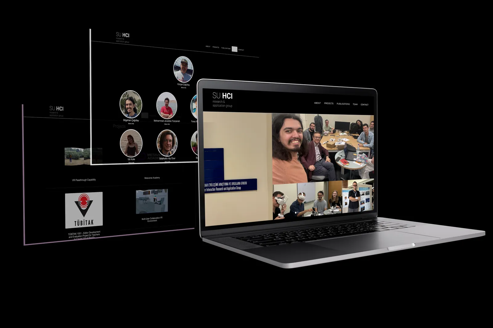
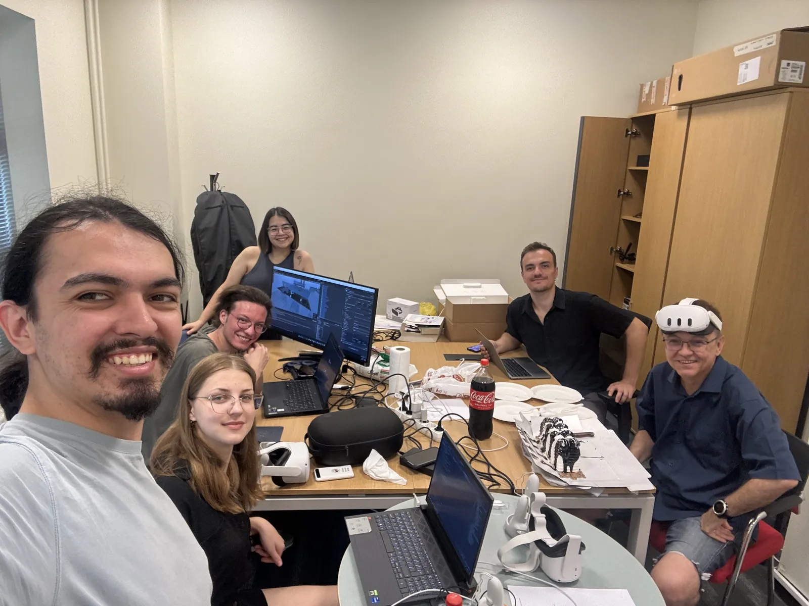
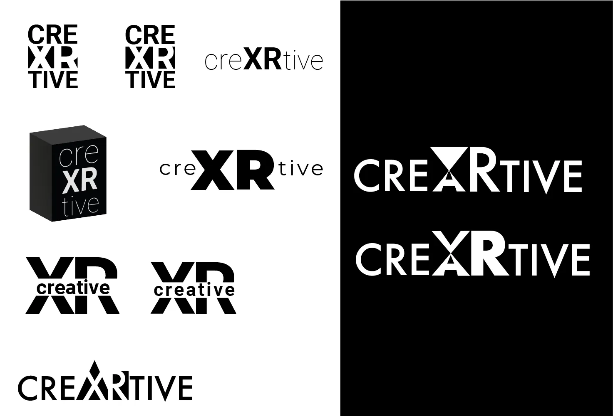
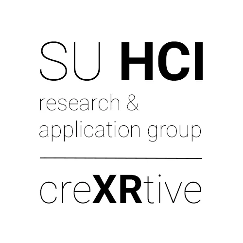

← Side projects/ 03 of 08
Lab identity & web · 2023 – 2025
creXRtive
A visual identity and research website for Sabancı University's HCI lab, built to look credible in a grant proposal, not flashy on a billboard.

Overview
An identity for an XR research lab
creXRtive is a Human–Computer Interaction lab at Sabancı University focused on extended reality, immersive interaction and user-centered experimentation. I developed the lab's visual identity and designed a web presence for its research, team and long-term goals.
The branding grew alongside a collaborative VR project for the lab, so it was shaped by a technical research environment rather than commercial styles.

Direction
Credible over expressive
The identity had to serve academic and publication-level communication, and feel consistent with the university's branding while still reflecting XR.
- Clarity over decoration
- Minimal geometry and structured layouts
- Professional, research-driven presentation
- Consistency across posters, documentation and web
Explorations
Finding the limits first
Early drafts tried geometric forms, 3D-inspired shapes, XR symbolism and more expressive styles. They showed me the limits: decorative or experimental forms didn't fit the academic tone the lab needed, so the direction moved toward something more restrained.

Logo
Quiet on purpose
The final logo takes a clean, minimal, typographic approach. Instead of illustrative XR references, subtle geometric balance and linear precision suggest technical rigor.
It sits comfortably next to Sabancı University's identity in grant proposals, conference materials and publications, and avoids trends so it will last.

Type & web
Built for reading research
One neutral sans-serif family across every platform, with hierarchy from scale and weight rather than decorative fonts, so posters, reports and VR documentation stay legible and consistent.
The website presents the lab's vision, research areas, team and XR projects in a modular, grid-based layout for students, collaborators and outside audiences. It works as both a communication platform and a portfolio of research outcomes.
- Minimal surface visuals
- Strong alignment and spacing
- Neutral typography
- Simple navigation, clear hierarchy
Next side project · 04
Digital Sun
Arduino and TouchDesigner, translating light into motion.